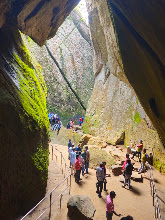
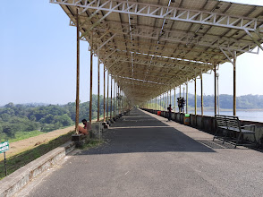
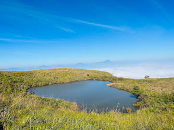
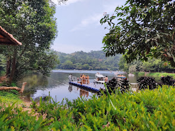
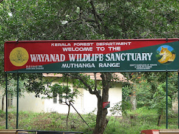

Wayanad is a quiet district in the Western Ghats mountains of Kerala. The name Wayanad means the land of paddy fields. It sits at a high altitude, giving it cool weather all year long. Tourists love this place for its green forests, roaring waterfalls, and deep history.
Wayanad is a gorgeous hill station in Kerala known as the "Green Paradise" for its mist-capped mountains, rich wildlife, and spice plantations.





Visit Wayand Famous Tourist Spot
Wayanad stands out as one of the best travel destinations in South India because it perfectly blends untouched nature, rich biodiversity, and deep historic roots into a single cool-climate escape